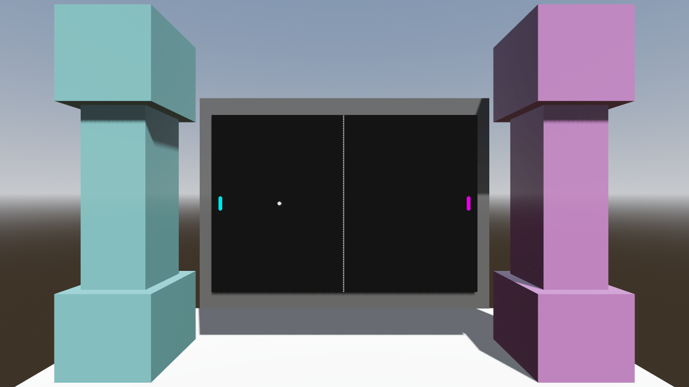
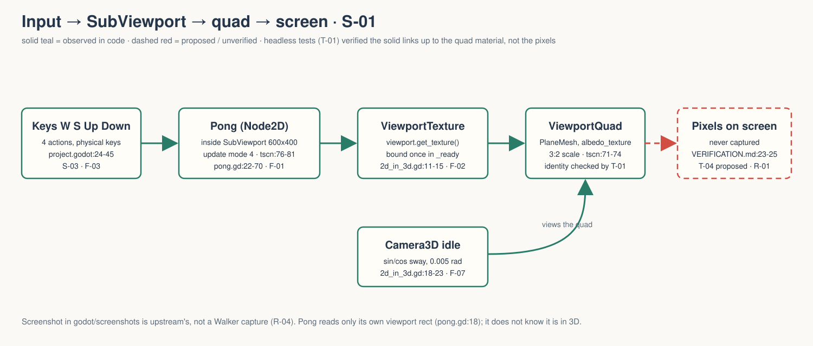
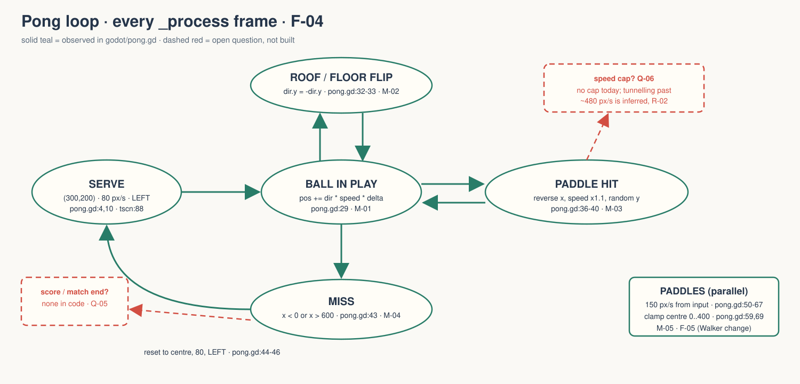
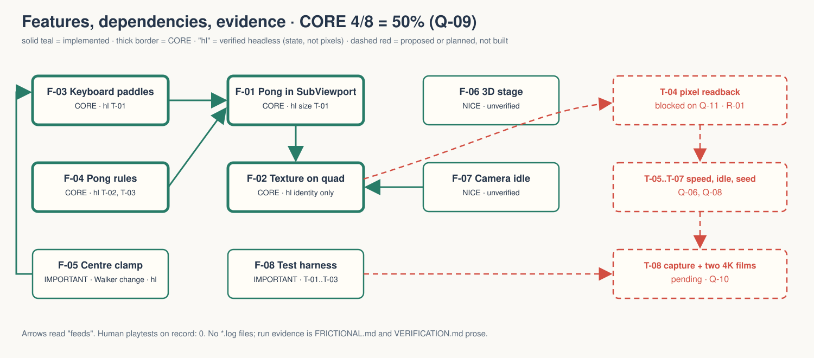

This is a tech demo, not a game. It proves one technique: a 2D scene rendered into a SubViewport, its texture put on a quad in a 3D room. Walker adaptation of the upstream Godot demo viewport/2d_in_3d.
OBSERVED in code or run records PROPOSED not built MISSING nobody has decided
gate — unsigned at time of writing. No gate is signed. No human has played it. → GDD.md header · arrow keys or space to advance

OBSERVED godot/screenshots/2d_in_3d.webp, shipped with the upstream demo. It is not a Walker capture and proves nothing about this adaptation's rendering (VERIFICATION.md:23-25).

Solid = observed. Dashed = the last hop, pixels on screen, unverified.

No score, no match end. Speed grows ×1.1 per hit with no cap. Both are open questions, not bugs yet.
Over the 40% line. Demoting Pong rules gives 37.5% but leaves a frozen ball as the "live" 2D scene. MISSING Nik Bear Brown picks: reduced MVP or accept the overage. Q-09.

| Check | Record |
|---|---|
| OBSERVED Import + 120-frame idle, Godot 4.7.2, exit 0 | FRICTIONAL.md:6-7 |
| OBSERVED T-01 keys move the right paddles; texture identity; 600×400; centres held in 0..400 | FRICTIONAL.md:15-28 |
| OBSERVED T-02 rebound at 88; miss resets to (300,200), 80, LEFT | FRICTIONAL.md:31-36 |
| OBSERVED T-03 rally: one run exit 1 (no roof), one run exit 0 | FRICTIONAL.md:39-49 |
| PROPOSED T-04 GPU pixels on the quad | none; blocked, Q-11 |
| PROPOSED Human capture and two 4K films | pending, VERIFICATION.md:21-30 |
Human playtests on record: 0. No *.log files kept; session ids live only in FRICTIONAL.md prose.
MISSING Q-01 Why is this demo in Walker, and what should it teach or prove?
MISSING Q-11 What clears the visible-recording blocker so pixels can be checked?
Also open: audience, pillars, PX goals, score, speed cap, paddle bound, camera axis quirk, CORE overage, film acceptance, quad input, timeline, upstream diff policy. Owner for all: Nik Bear Brown.